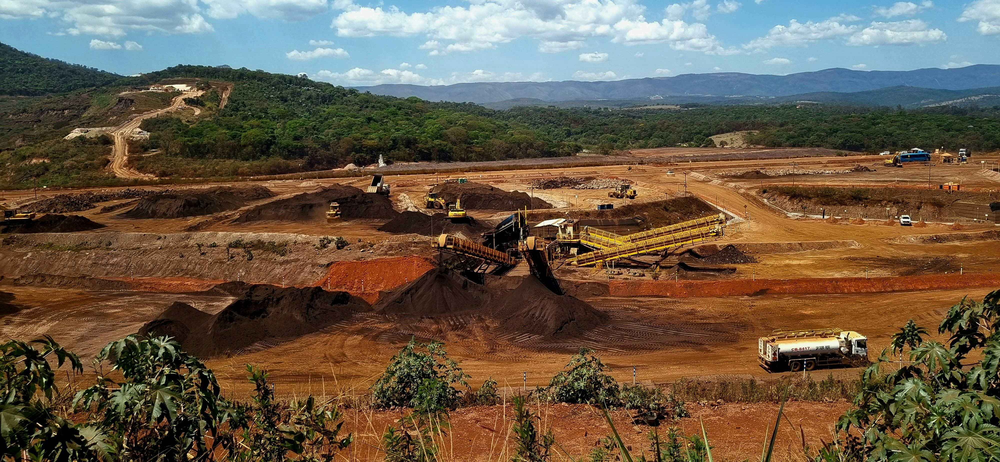

A strategic alliance combining three decades of mining expertise across Egypt, the Middle East and Tanzania — delivering geological excellence, operational rigour and responsible stewardship of the land.
GMC Ashariq is the result of a powerful alliance between GMC Group — an experienced operator in cement-grade miningwi and quarry management across Egypt and the Middle East — and Ashariq Group, a Tanzanian operator with deep local presence and commercial expertise.
Together we bring international engineering standards and local operational intelligence to one of Africa's most promising mining markets, with a focus on cement raw materials, industrial minerals, and sustainable quarry development.
Discover Our Story →
From first geological survey to final land rehabilitation, GMC Ashariq operates the complete mining value chain under one engineering culture.
Comprehensive geological investigations, raw material assessment and deposit characterisation.
Learn more 02High-resolution 3D block modelling integrating chemistry, structure, and topography.
Learn more 03Bench-by-bench reserve calculations and volume analyses grounded in geostatistical rigour.
Learn more 04Core drilling grid design and rotary drilling operations with 95%+ core recovery.
Learn more 05Advanced blast design, monitoring and VOD measurement — held to the highest safety standards.
Learn more 06End-to-end quarry operations — extraction, crushing, screening and logistics optimisation.
Learn more 07Mine rehabilitation studies and land restoration plans that return operational areas to ecological balance.
Learn more 08Expert advisory across mine planning, process optimisation and minerals processing.
Learn moreA leadership team with combined experience across LafargeHolcim, Heidelberg, GSK, and Africa's largest cement operators.
Two decades of international experience leading geology, raw material sourcing and mining operations for global cement producers across the Middle East and Africa.
CEO of ASHARIQ Company since 2010. Former CEO of ICMI. Expert in P&L leadership, strategic planning and commercial operations across the mining sector.
Over 34 years in cement and heavy building materials. Expert in exploration, process optimisation and operational strategy. With GMC since 2016.
From geological survey to total quarry management — talk to our engineering team about your operation.